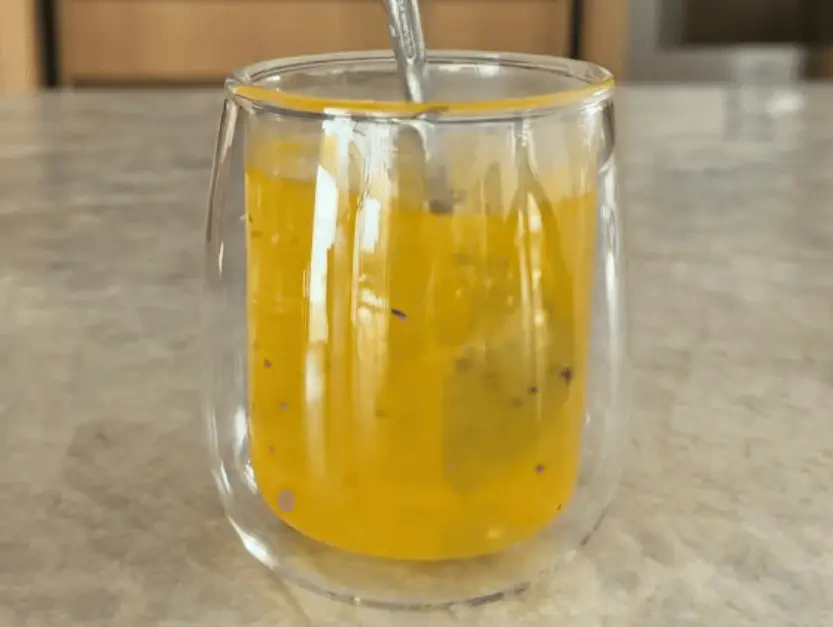

Try This Little-Known Vitamin That's Helping Thousands of People Over 60 Move Better

If You're Over 60, You Need to Know About This Discovery
Walking across the room, climbing into the car, and getting a solid night's sleep once felt effortless. But as the years add up, it's common to feel like your body simply doesn't respond the way it used to — and the energy for everyday activities slowly starts to fade.
A lot of people assume this is just "part of getting older" and that there's nothing to be done about it. But a study led by a Nobel Prize–winning scientist revealed something surprisingly different.
The good news?
There's a little-known yellow nutrient that more than 48,000 people over the age of 60 have already added to their daily routine — and they're reporting more energy, more comfort in their joints, and far better nights of sleep.
Click below to watch the short video and discover exactly how this nutrient works — and how you can start using it as early as today.
Click For The RecipePAES CASEIROS VO MARIA LTDA · CNPJ: 48.310.831/0001-96
R GERAL, SN, BOM RETIRO, PAULO LOPES - SC, CEP: 88.490-000
Tel: (48) 9645-0944 · CIDADEMETRIO600@GMAIL.COM
These statements have not been evaluated by the FDA. This product is not intended to diagnose, treat, cure or prevent any disease or medical condition. Individual results may vary. Not a medical device. Please consult your physician before using this or any other product that is designed to help relieve a symptom or condition.
Nothing on this website should be considered personalized financial advice. Any investments recommended herein should be made only after consulting with your investment advisor and only after reviewing the prospectus or financial statements of the company. Past performance does not guarantee future results. The examples provided may not be representative of typical results. Never risk more than you can afford to lose.
This is an advertorial and not an actual news article, blog, or consumer protection update.
DISCLAIMER
This website is not intended to provide medical advice or to take the place of medical advice and treatment from your personal physician. Visitors are advised to consult their own doctors or other qualified health professionals regarding the treatment of medical conditions. The author shall not be held liable or responsible for any misunderstanding or misuse of the information contained on this site, or for any loss, damage, or injury caused, or alleged to be caused, directly or indirectly by any treatment, action, or application of any food or food source discussed on this website.